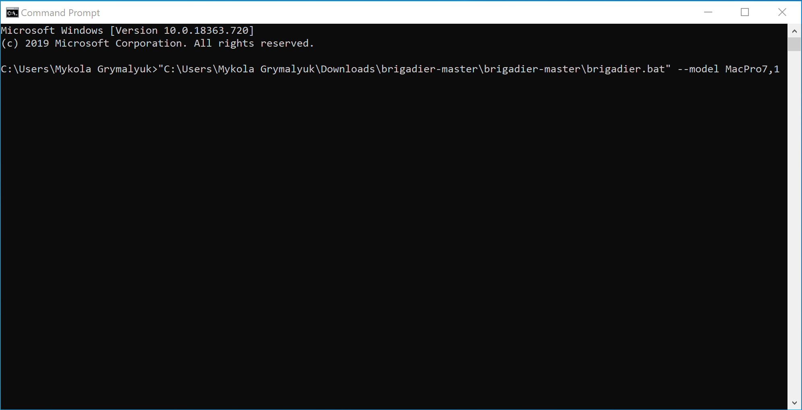
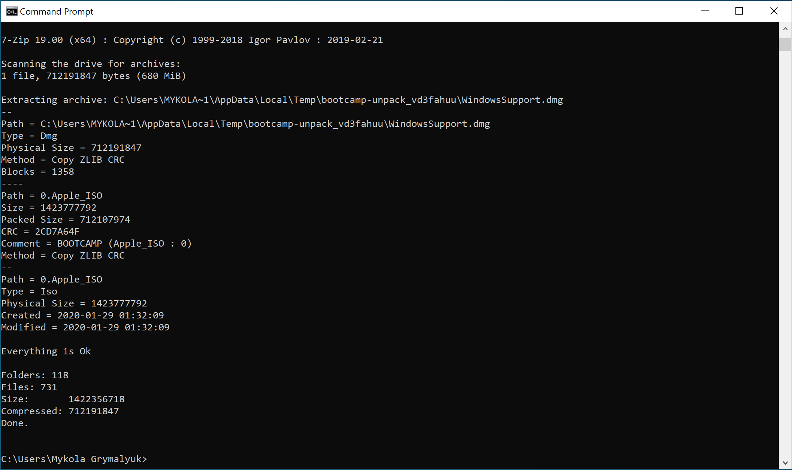
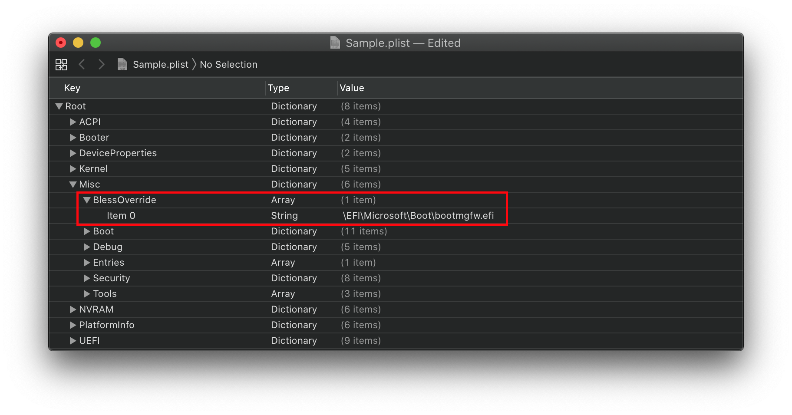

Last modified: Wed Jun 03 2020 14:35:17 GMT+0000 (Coordinated Universal Time)
Installing and using BootCamp utilities
So a neat feature of OpenCore is the ability to avoid the BIOS entirely and use Startup disk solely for multiboot. Problem comes in when we try to boot windows and have no way of setting the boot option back to macOS. That's where the BootCamp utilities come in.
- Note: This guide will not cover the creation of the Windows installer, only the installation of BootCamp drivers.
- Example of Windows installer creation: Build a Bootable Windows ISO
- Reminder: Windows MUST be GPT/GUID based, OpenCore will not boot legacy installs
- Note 2: Using BootCamp utilities from macOS will erase the EFI/BOOT/BOOTx64.efi file on your EFI, which is needed for booting OpenCore. And OpenCore itself does not support MBR based installs so the utility is useless to us
Preparations
To start we'll need the following:
- Windows already installed
- MUST be UEFI/GPT based
- Brigadier
- To download the BootCamp drivers
- SMBIOS injection enabled
- As the drivers have a SMBIOS check
- Setup Bootstrap.efi
- Not required but can help alleviate headaches when Windows erases the BOOTx64.efi OpenCore uses
Installation
To install, it's as simple as grabbing Brigadier and running either Brigadier.bat for Windows or Brigadier.command for macOS. If the SMBIOS you're currently using either has BootCamp issues or want to download for another SMBIOS, you can add -- model{SMBIOS} to the end:
path/to/Brigadier --model MacPro7,1
- Note: Older versions of the Bootcamp installer(6.0) do not support APFS, you'll need to either choose a newer SMBIOS that would have it bundled(ie. iMac 19,1) or after installation update your bootcamp software. See below for more details on troubleshooting: Windows Startup Disk can't see APFS drives

Next you will find our bootcamp drivers under either:
- Windows:
\Users\{Username}\bootcamp-{filename}\BootCamp
- macOS:
/Users/{Username}/BootCamp-{filename}/WindowsSupport.dmg
macOS users will next need to expand WindowsSupport.dmg and place it somewhere Windows can get.

Next navigate to the bootcamp-{filename}\BootCamp folder and run the Setup.exe:

Once all is finished, you now have Bootcamp switching! There should be a little BootCamp icon in you tray now that you can select which drive to boot to.
- Note: For those no needing the extra drivers BootCamp provides, you can delete the following:
$WinPEDriver$: DO NOT delete the folder itself, just the drivers inside- Apple Wifi card users will want to keep the following:
$WinPEDriver$/BroadcomWireless$WinPEDriver$/BroadcomBluetooth$WinPEDriver$/AppleBluetoothBroadcom
- Apple Wifi card users will want to keep the following:
BootCamp/Drivers/...- DO NOT delete
BootCamp/Drivers/Apple - Apple Wifi card users will want to keep the following:
BootCamp/Drivers/Broadcom/BroadcomBluetooth
- DO NOT delete
Troubleshooting
- Can't find Windows/BootCamp drive in picker
- "You can't change the startup disk to the selected disk" error
- Booting Windows results in BlueScreen or Linux crashes
- Booting Windows error:
OCB: StartImage failed - Already started - Windows Startup Disk can't see APFS drives
Can't find Windows/BootCamp drive in picker
So with OpenCore, we have to note that legacy Windows installs are not supported, only UEFI. Most installs now are UEFI based but those made by BootCamp Assistant in macOS are legacy based, so you'll have to find other means to make an installer(Google's your friend). This also means MasterBootRecord/Hybrid partitions are also broken so you'll need to format the drive you want to install onto with DiskUtility.
Now to get onto troubleshooting:
- Make sure
Misc -> Security -> ScanPolicyis set to0to show all drives
If Windows and OpenCore's boot loaders are on the same drive, you'll need to add a BlessOverride entry:
Misc -> BlessOverride -> \EFI\Microsoft\Boot\bootmgfw.efi
- Note: As of OpenCore 0.5.9, this no longer needs to be specified. OpenCore should pick up on this entry automatically

"You can't change the startup disk to the selected disk" error
This is commonly caused by either:
- 3rd Party NTFS Drivers(ie. Paragon)
- Irregular partition setup of the Windows drive, specifically that the EFI is not the first partition.
To fix the former, either disable or uninstall these tools.
To fix the latter, we need to enable this quirk:
PlatformInfo -> Generic -> AdviseWindows -> True

Booting Windows results in BlueScreen or Linux crashes
This is due to alignment issues, make sure SyncRuntimePermissions is enabled on firmwares supporting MATs. Check your logs whether your firmware supports Memory Attribute Tables(generally seen on 2018 firmwares and newer)
For Z390 and newer motherboards, you'll also want to enable ProtectUefiServices to ensure OpenCore's patches are applying correctly.
If your firmware is is quite old(generally 2013 and older), you'll want to enable ProtectMemoryRegions.
Due to the variations of firmwares from vendor to vendor, you'll need to play around with the combination of these 3 quirks and see which works best.
Common Windows error code:
0xc000000d
Booting Windows error: OCB: StartImage failed - Already started
This is due to OpenCore getting confused when trying to boot Windows and accidentally thinking it's booting OpenCore. This can be avoided by either move Windows to it's own drive or adding a custom drive path under BlessOverride. See Configuration.pdf and Can't find Windows/BootCamp drive in picker entry for more details.
Windows Startup Disk can't see APFS drives
- Outdated BootCamp drivers(generally ver 6.0 will come with brigadier, BootCamp Utility in macOS provides newer version like ver 6.1). You can try to alleviate these issues by either updating to the newest release with Apple's software updater or selecting a newer SMBIOS from brigadier(ie.
--model iMac19,1) and when running brigadier.
For the latter, you'll need to run the following(replace filename.msi with the Bootcamp installation msi):
msiexec.exe /x "c:\filename.msi"